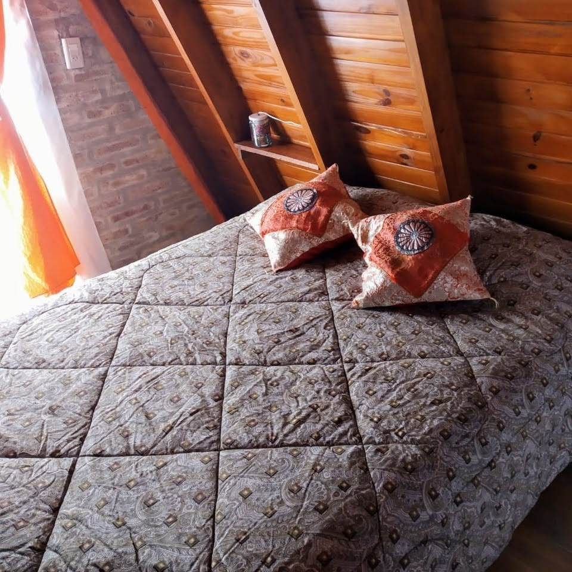
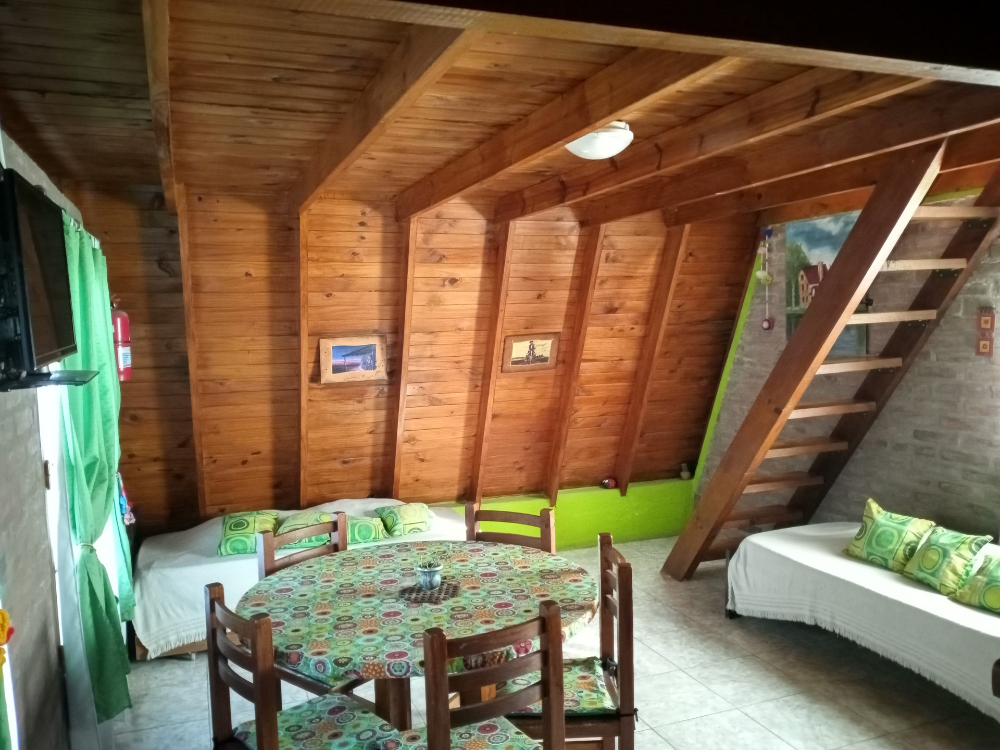
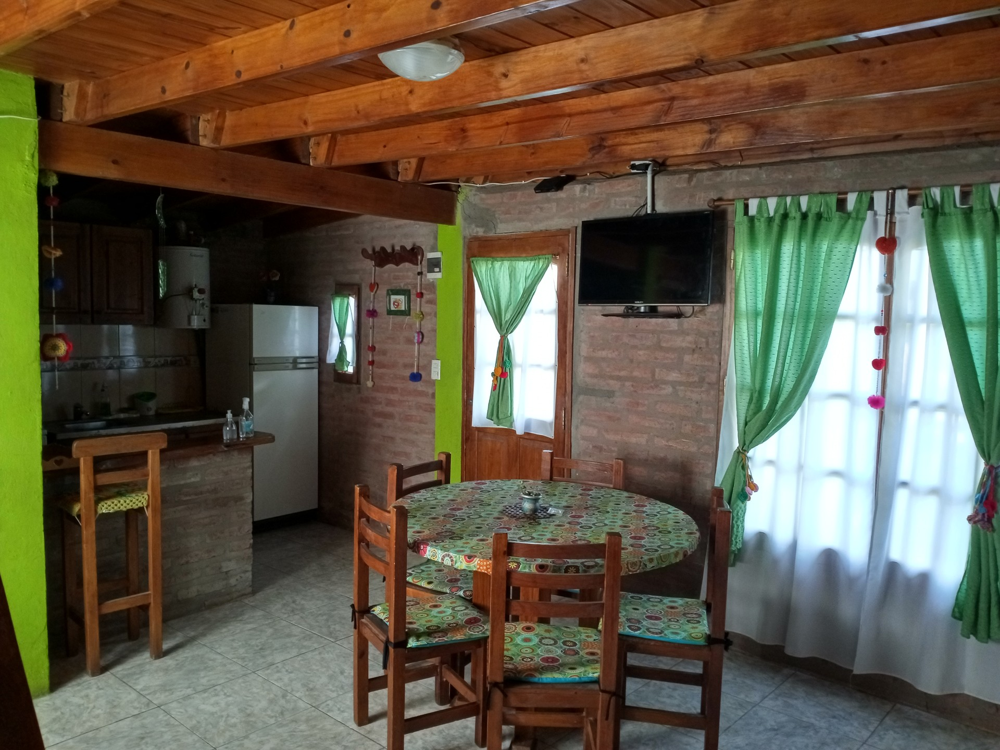
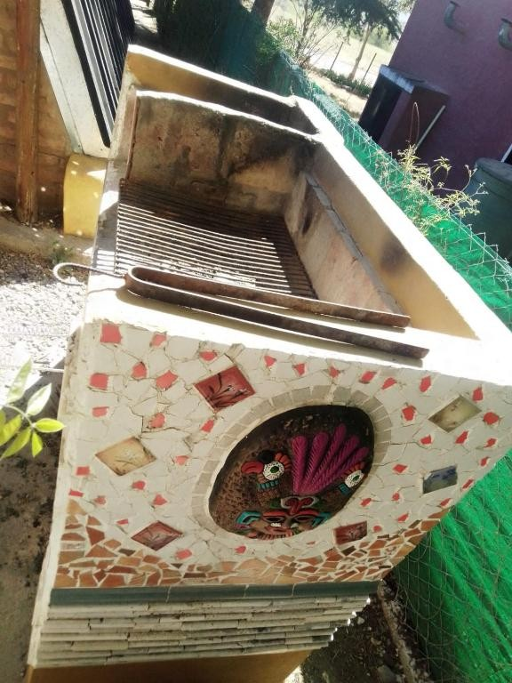
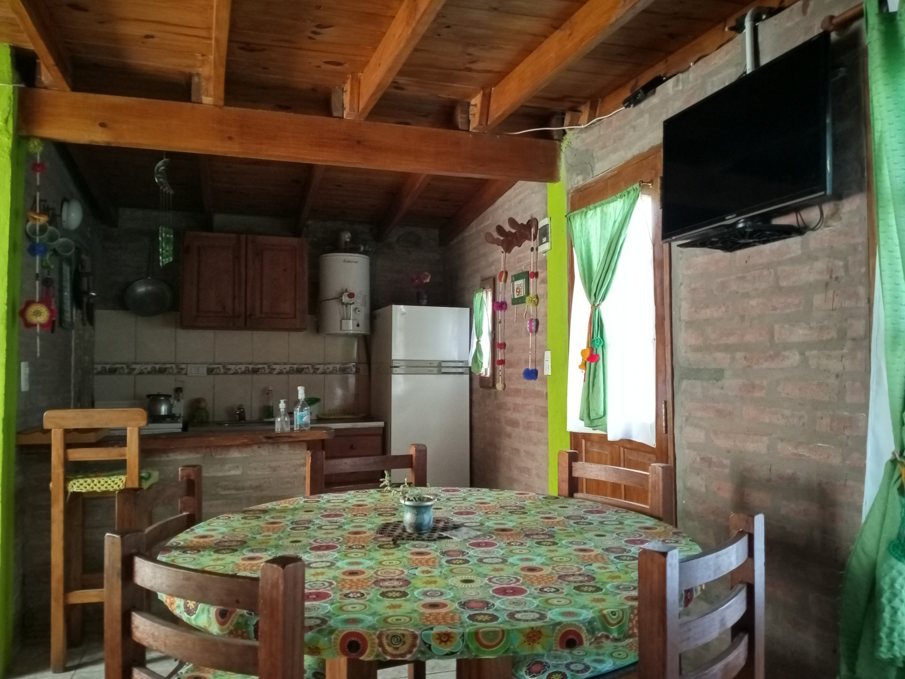

Cabaña Alpina 1 en Bialet Massé
Living amplio abajo, balcón a las sierras arriba
Cabaña alpina de dos plantas · Hasta 4 personas · ideal para 2 adultos · quinta plaza opcional en carrito cama








8 fotos · usá las flechas o tocá una foto para verla en grande
Cómo es
Cabaña de dos plantas pensada para 4 personas, con cálidos detalles. Arriba, dormitorio matrimonial con aire frío-calor y balcón con vista a las sierras. Abajo, living-comedor con 2 camas de una plaza (sirven para adultos), carrito cama opcional para una quinta plaza, estufa a gas y panel eléctrico, cocina con horno y heladera con freezer. Estacionamiento y pérgola con asador propios. En el parque: pileta, juegos y canchas.
Súper cómoda para dos y pensada para familias o grupos de hasta 4.
- Planta baja de 6 × 5,5 m (unos 33 m²): living-comedor, cocina con barra desayunadora, baño completo con ducha y 2 camas de una plaza que sirven para adultos.
- Planta alta: dormitorio matrimonial con aire acondicionado frío-calor y balcón con vista panorámica a las sierras.
- Quinta plaza opcional en carrito cama (colchón cómodo, con un espacio más justo): consultanos.
Qué incluye
- WiFi
- Smart TV con apps
- Aire acondicionado (PA)
- Estufa a gas + panel eléctrico (PB)
- Pérgola con asador
- Cocina con horno
- Heladera con freezer
- Ropa blanca
- Estacionamiento individual
- Baño completo con ducha
En el complejo
- Pileta descubierta de 6 × 3 m y 1,50 m de profundidad, con solarium (de 10 a 20 h).
- Parque de unos 2.000 m² con hamacas, casita para chicos y canchas de fútbol, vóley y tejo.
- Pérgola propia con bancos, mesa y asador junto a cada unidad.
- Estacionamiento techado con media sombra.
- Los dueños vivimos en el mismo predio: te recibimos y estamos cerca si necesitás algo.
Antes de reservar
- Check-in desde las 11:30 y check-out hasta las 10:00 (si necesitás otro horario, lo coordinamos por WhatsApp según el día).
- Seña del 50 % para confirmar; sin depósito en garantía.
- Cancelación sin cargo de la seña hasta 15 días antes del ingreso. Entre 8 y 15 días se retiene el 50 % de la seña; con 7 días o menos, la seña no se reintegra.
- Mascotas chicas (perro o gato), avisando al reservar. No pueden quedar solas en la unidad.
Dónde queda
Los Talas 759, Barrio Mirador del Lago, Bialet Massé, Córdoba. A 600 m del lago San Roque y del arroyo Las Mojarras, a unos 2 km del centro de Bialet Massé y a 600 m de la rotonda de la autovía.